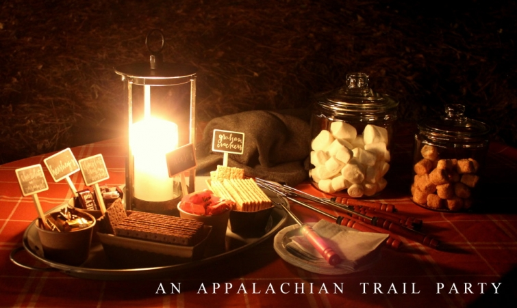
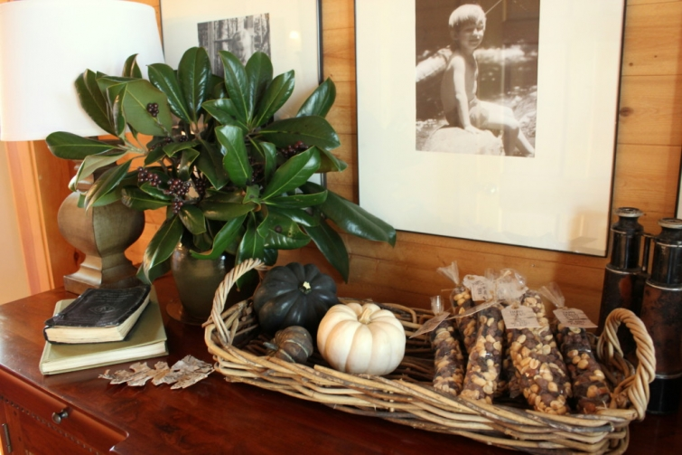
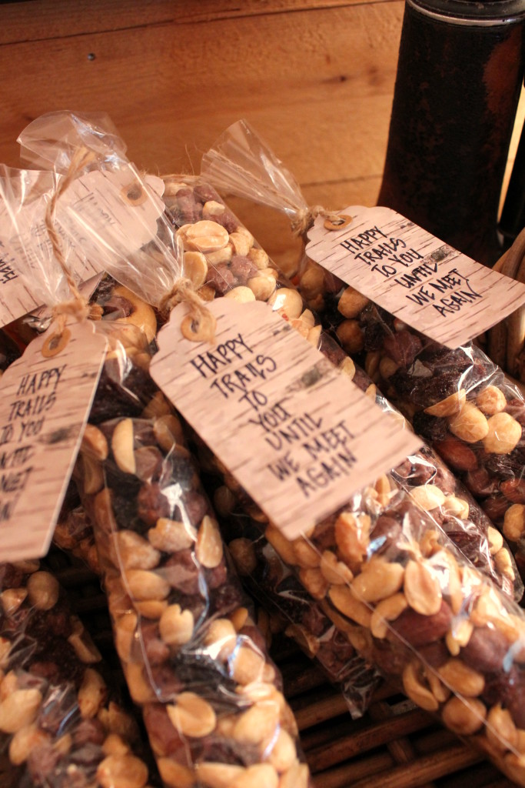

.png)
.PNG)
.PNG)
.PNG)
.PNG)
.PNG)
.JPG)
.JPG)
.PNG)
.PNG)


Life should be celebrated…the big and the small moments. This has been my philosophy for a very long time, and through the years we have done our share of celebrating around here. From birthday parties to Christmas parties, baby showers to bridal showers, first day of school parties to college graduation parties – and everything in between. This weekend we celebrated something BIG – a really big accomplishment by one of our friends. And what did he do? Well, this friend of ours completed a thru-hike of the Appalachian Trail this year – all 2,189+ miles from Georgia’s Springer Mountain to Katahdin in Maine. Kind of major, right? This achievement certainly called for a celebration. 🙂
And I know you want all the house/party/menu details. So let’s start at the beginning. We gathered a group of friends together – friends from high school and college who have backpacked, hiked, and canoed together over the years. I wanted the party to have kind of a “campy theme” so all the green and brown decorating around the house this month worked very well for it. I only had to tweak the display on the buffet a bit by adding a couple of Appalachian Trail books and…

the trail mix “goody bags” for the guests.

They arrived Saturday morning. Our lunch that day consisted of what I thought of as a somewhat “camp” kind of meal – beef stew, tossed salad, cornbread muffins, and gingerbread served in the dining room with the Thanksgiving centerpiece in place – minus the space hogging large white pumpkin. (Sorry – no photo. I didn’t want everyone to feel self conscious of the camera all weekend.) Most of the afternoon was spent just relaxing and talking around a campfire my husband had set up in the woods near our house…a good way to reconnect with folks we had not seen in many years. Mid-afternoon, I put together a cheese tray for everyone to snack on. No “fancy” cheeses this time…just good traditional tried-and-true ones.
Planning the dinner for that evening was a lot of fun. Remember I said I wanted the celebration to have a camp feel? That made the logical place for the big meal my husband’s newly decorated office – the one with the camping gear on the wall. I was shopping for the room and things for the party at the same time the last few weeks. Target’s rust and gray plaid items were also great for the table.
I wanted everyone to take home something to remember our celebration. The mugs with plaid initials were perfect….but there was a problem. I couldn’t find everyone’s initials at our local Target (nor enough of the coordinating plates for the table.) 🙁
Fortunately, during this planning time my husband and I made a trip to Chattanooga, Tennessee for a conference. That ever patient man and I stopped at what must have been every single Target between here and there (and even driving to one north of Chattanooga) to find them…and find them we did. 🙂 Some were our guests’ first name initials and some were the initial of their last name, but either way, it worked out. A day before the party I hauled all of our purchases up to the room over the garage to set it up.
I did this for several reasons. First, I wanted this set up to be a surprise for our guests. Secondly, it would have been too dark for you to see it if I had waited until the dinner to photograph it, and finally, I again did not want our guests to feel intimidated by the camera. (They aren’t like our daughter and her friends who are constantly taking selfies!) So here is the finished table.
The runner down the middle is a black and white copy of a map of the Appalachian Trail that we sent home with the guest of honor. The birch bark “leaves” came from a Smith + Hawken swag from Target. (The swags match the wreaths some of you asked about in the Thanksgiving Tour post.) I bought the two wreaths for the doors (dressed them up with brown ribbon) and a couple of swags to use for their materials.
I alternated gray plaid dish towels with rust plaid napkins at each place setting.
In planning this event, I wanted a menu of food that wasn’t too difficult to prepare and could easily be transported upstairs. So we had a Boston Butt from a local barbecue place, (thanks Mom for picking it up for us!) baked beans, Ramen coleslaw, traditional coleslaw, and apple cake with whipped cream. My darn cake did not rise like it should have 🙁 but it still tasted fine. (Thank goodness!) We used the coffee bar cabinet for the coffee and desserts. (It was too dark to photograph the cake by the time I got it up there.)
I found the wood slice cake stand at TJ Maxx and the wood slice at Target. The candle holder was also part of the Smith + Hawken line that the wreaths were from.
When it was finally time for dinner, I announced, Time to eat! and they all began to pile into the dining room. But then I said, We’re not eating in here. We are going upstairs. Such a fun surprise since most of the guests had no idea that we even had that room upstairs. 🙂
Here is one of the few shots I took of the party. Our guest of honor is the one in the cap. When you are hiking the AT you have a trail name, a nickname of sorts. His trail name is Wrinkles. He is such a kind, humble man who really doesn’t want any big deal made over him. Besides walking those millions of steps to complete the Appalachian Trail, Wrinkles is a devoted dad, grandfather, an Eagle scout, and has been a Boy Scout leader for 21 years…someone definitely deserving of a “big deal.” 🙂
A short time after dinner, we all followed the path back to the campfire. One of the other guests had helped my husband string Christmas lights there earlier in the day. (Thanks Terry!) I know campsites don’t have Christmas lights, but I just couldn’t resist it. 🙂 (Plus whimpy-girl here wanted to see what she might be stepping on!)
A smore’s bar was set up on the table near the campfire.
Saturday night had very mild temperatures, so we only had cold drinks with the smore’s. We hosted another campfire and marshmallow roast on Sunday night when it was very cold (with a different group of folks.) Here is what the table – including hot drinks – looked like then.
Breakfast the next morning was typical eggs, bacon, and grits. Lunch was corned beef sandwiches, potato chips, and a choice of any and every leftover dessert in the house. 🙂 (Plus Toll-house chocolate chip cookies and brownies!)
And that was our very fun weekend. I think celebrations are a way of giving thanks for all the many wonderful things that happen in our lives. Whether they are small or big events, they are all a part of what makes us who we are. That probably explains why I feel celebrations are so important. Gathering together is important. And on this day before the official day of giving thanks, I am thankful for friends…friends to share laughter and fellowship with..friends to celebrate accomplishments with…friends that we can just pick up with even if we haven’t seen them in years. So congratulations to Wrinkles. 🙂 We all enjoyed celebrating your accomplishment this weekend.
And I am thankful for you friends here who follow along…whether it is a celebration or a room decoration. I hope your day tomorrow is filled with gathering together with family or friends to celebrate and give thanks for all the blessings – big or small – you have been given. Happy Thanksgiving!
Until next time…


.PNG)
Inspiring! Loved the upstairs room and all the coordinated party details. You are amazing.
Congratulations to Wrinkles! What an accomplishment!
I am e-mail pen pal with a lady in Ga. whom I have never met. But anyway, she and her spouse are AP trail volunteers. They maintain a section of the trail in Ga., and she is always telling me about their get-togethers at an Inn for hikers. And about how they maintain their part of the trail. Perhaps they have met your Wrinkles along the way! They hike most weekends, but have not been able for the last week or so, as her hubby had a health scare and is recovering as I write. I admire anyone who can do that hike, as I know I could never get a mile!!!
Beautiful! Absolutly beautiful and thoughtful and caring. I noticed the book idea was mentioned again. Hope your thinking about it. It would give Pottery Barn a run for their money. 🙂
Wow!!!! You are such an inspiration to so many people!! What wonderful ideas!!! I love “checking in” on your blog to see if you have posted something new!!! Such wonderful ideas with every post!! Thanks for all the inspiration!!!!
Wow, such an accomplishment for your friend! That is a dream of my husband (to hike the entire trail). Your camp theme was so creatively carried out. I love all the things you get at Target and then how you put them together in your home in such a unique way. As always, thanks for sharing!
Into the Woods was a most interesting book! I just lovedall the adventures. What an adventure for your friend!! And what a delightful post.
Kelly,
What an accomplishment for your friend! How wonderful everything looks. I love the camp feel you created. The party looks like it would have been very fun.
xo,
Karen
Happy Thanksgiving Kelly! You did it again! As Wendy Williams says, You are truly one of my best girlfriends in my head.
Thanks for sharing.
Kelly,
What a nice celebration for your friend! I love the string lights leading to the campfire. Everyone should have string lights leading and around their “Happy Place”. I just bought a string of commercial outdoor lights @ Costco and plan to string them on the back deck.
Happy Thanksgiving!
DiAnne
Oh how neat! I just love this theme! Only you could make a camping theme looks so beautiful! Everything you found is just perfect for the occasion. I believe in celebrations too! Thanks so much for sharing with us. I get such wonderful ideas and inspiration from you. Hope your Thanksgiving was blessed!
Kelly,
Everything looks so nice and the food and drinks looks delicious. I really like all of your celebration ideas and decorations. Thank you for sharing them with us and thanks for your blog friendship. Have a happy and healthy Thanksgiving.
And thank you for sharing about your thinking on life and celebration. Worthwhile to remember.
Love to you and yours.
Oh how I would have loved to be invited to this celebration! You do everything so well and make every occasion special. I love your attention to detail. Reading your blog is something I always look forward to. Happy Thanksgiving!
Your party looked wonderful. How fun to have it hosted up in the new room. Loved all the plaid and wood décor touches Kelly. Oh…Target! I have been grabbing up quite a few of their fun buffalo plaid items. I couldn’t help but think (Terrain or Folk) when I saw your photo with the lights and fire pit. Great picture. Oh, how your husband is such a good sport with all your doings. You make a great team. Happy Thanksgiving to you and your family, Kelly.
Wow! You are amazing! This may be my favorite yet! You inspire me to celebrate life’s occasions! Have you ever thought of writing a book on entertaining?!? It would be a top seller! Happy Thanksgiving!
As a more recent viewer to your blog, I’m having so much fun looking at all your past posts and how you change your decor ideas with each event or holiday. I just love your upstairs area and while I like your first decor your recent changes are just brilliant! Happy Thanksgiving!
You do a better job of celebrating life than anyone I’ve ever known or heard of, and I marvel at your creativity, energy, and equanimity in pulling together event after event — and so beautifully! And to top it off, you magically find time to record it all and share it with us! Don’t know how you do it, but I’m grateful that you do. Wishing you, your family, and all of the other ToTH readers a joyous Thanksgiving. 🙂
Cool celebration! Happy Thanksgiving! 😉
Oh, my! Katrina had a great idea for you to write a book of celebrations! Congratulations to Wrinkles! Kelly, you are a great friend to host such a fun, thoughtful celebration. Everything looked like so much fun. I hope you have a wonderful Thanksgiving!
Please tell me you are going to write a book…. A book on celebrations! I just love how you make any and all occasions so special!
Congratulations to Wrinkles… What an accomplishment!
I was just wondering…. Did you and your husband go see A Walk in the Woods? Please tell me you are going to do a post on downtown Chattanooga! I just love that downtown! We were there two weekends ago. It was perfect weather for walking the bridge to Coolidge Park and exploring Point Park on Lookout Mtn.
Have a joyous Thanksgiving! I am thankful for Kelly and Talk of the House.
Wow! You are amazing! Such attention to detail!
Kelly, how wonderful of you to celebrate this humble friend of yours. Those are the kind of people who really deserve a bit of a fuss. Thank you for making his accomplishment a big deal and letting us celebrate with you. Your attention to detail is, as always, impressive.
What an original party!! I am following the travels of a friend of a friend who is on the trail right now. His nick name is Butter! He started out in Maine and has made it to Virginia. I am fascinated by the people who are so disciplined to walk that trail.
What a lovely party from start to finish. Everything is gorgeous down to the last detail. This is such a nice way to honor a special friend.
Happy Thanksgiving!
Absolutely beautiful! What a clever scheme and love the colors! How special your guest of honor must have felt. I could learn SO MUCH from you!! Happy Thanksgiving.
Now I look forward to your Christmas decor!
You deserve a celebration for Entertainer of the Year!!! Sally
Kelly, you out did yourself with this wonderful camping weekend…how fun. This is my kind of camping. Congrats to your friend, that is some feat to hike that trail (not because I personally know but ya hear stories). You can come and plan any party at my house anytime.
Kelly,
Every time I read one of your posts, I think “this is the best one yet”! But I really do think this is the best one yet!! I was actually smiling all the way through. And having belatedly just read A Walk in the Woods, I appreciated Wrinkles’ accomplishment!
Thank you for sharing your beautiful celebration with us.
~Ann
What a wonderful weekend! And, what a wonderful accomplishment for your friend! We are a scouting family. Our son is an Eagle and my husband was an adult leader for his troop.
I love the “camp” ambience and menu you came up with. I agree that it’s wonderful to celebrate the moments in life. That’s what memories are made of! Have a happy Thanksgiving, Kelly!
Hi Kelly! Everything about this post is just wonderful …the thought and attention to detail as well as sheer hard work that you put into this celebration for your friend.The photographs, food, evening in the woods,(This looks just wonderful,great idea!) just how amazing your home looks … as usual! Especially the room over the garage. It all speaks volumes about what great friends you and your husband are as well as the achievement of Wrinkles. I bet he could write a book about his journey … I, for one would love to read it! To do that hike must be such a great life experience.
Wishing you, your family and friends a very happy Thanksgiving and a peaceful, happy and healthy year ahead.
Rosemary
Kelly,
You are too, too, much! You went above and beyond and did not miss a single detail – big or small.
You must have tons of storage space for all your fun accessories! Would love to see you storage closets.
I can only imagine your friend was over the moon with the celebration you had for him.
Hope you have a blessed and peaceful Thanksgiving,
Kate
Kelly, you have outdone yourself!! I think this is my favorite party of yours. I read “Hiking Through” by Paul Stutzman this year and found it fascinating. How wonderful to celebrate your friend’s accomplishment. And what an accomplishment!! 🙂 I can’t even compliment your attention to detail enough. I don’t have a Target close to me but apparently I need to get there more often! Those products were perfect for your party. One of the things Stutzman wrote about in his book was “trail magic” and I am determined to leave some “trail magic” on the AT someday!! 🙂 Thank you for the constant inspiration from your blog. Also, your kindness and graciousness. I feel it when I visit. 🙂
Your style is just warm and comforting. Simply beautiful!
Kelly, you are the perfect hostess. I wished I would have checked with you about my plans for hostessing next Monday’s Christmas brunch. I’m sure you would have given me a cute inspiration. Next time, wink, wink. Love the wood slice cake stand and that matching tray. I know your friends are always delighted to be guests at your home. I know I would be and there would be “no school talk.”
I read this entire post exclaiming and sighing at the same time “Oh, Kelly…” Everything is amazing! I really need to check out Target more often lol I’m thankful for finding your blog a few months ago. Your joie de vivre and love of life and family and friends with all the connections is just wonderful. Congratulations to “Wrinkles” on his very major accomplishment! That’s fantastic, and I give him so much credit for actually doing it 🙂 Back in the ’70s when I was in college, my dream was to begin in Maine and hike to the Georgia end of the AP, so this brought back some memories! I did manage to climb Mt. Marcy, the highest peak in NY, but never got to the AP hike. A Walk in the Woods was such a great book, but back then the book we were all reading was A Walk Across America by Peter Jensen, and I absorbed every word. Thankful I am still active and walking and traveling! LOL
Such fun – love everything you did with the room and the party and the campfire! Happy, Happy Thanksgiving!!! We are blessed ♥
P.S. Did you buy those brackets over the sink or did your husband make them? I’m doing some open shelves and debating over metal or wood brackets. I like the profile of these.
———————————————————————-
Hi Carolyn,
We purchased the brackets at Home Depot, and I think this is the model: http://www.homedepot.com/p/Ekena-Millwork-1-3-4-in-x-8-in-x-8-in-Rubberwood-Medium-Olympic-Bracket-BKTW01X08X08OLRW/206662238?keyword=Ekena+Millwork+BKTW01X08X08OLRW
Hope your project goes well!
Kelly
Wow! How cool is that? Looks like it was a fun weekend. I still have some of those same wood grain cocktail napkins on your dessert bar left from my son’s mountain barn rehearsal dinner. I love that cake stand! Want! I also love your gray cabinets in the ‘office’. I think your husband made them? Great job.
Happy Thanksgiving here from Canada a day early! Kelly you are the best hostess and your husband host there is. I love how you made everyone feel special and the camp fire with the smore’s bar I will being this next year. I get pretty excited when I see I have a email from you! I am Thankful for Kelly!
What a great celebration! All of your decorations were so fitting for the occasion. Have a wonderful Thanksgiving..
Reading Into the Woods right now, so have a much better understanding of what your friend has accomplished. What a wonderful celebration of such a monumental undertaking! As always, lovely and so welcoming.